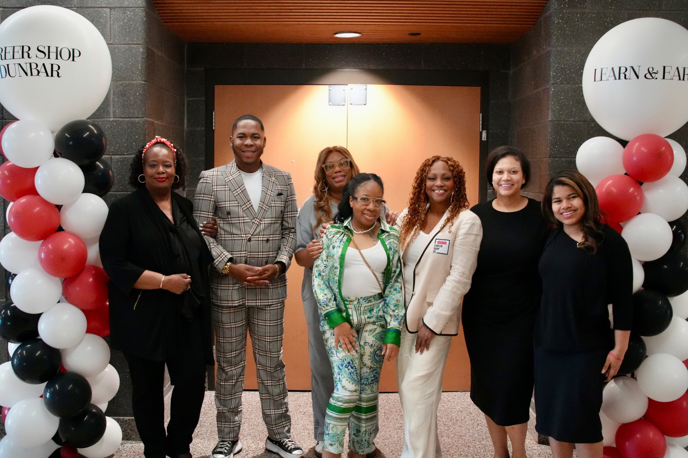
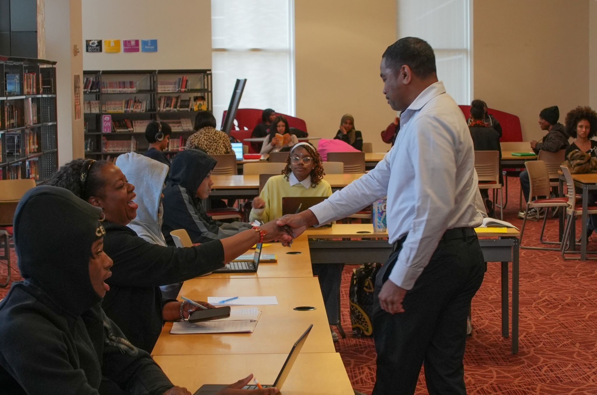
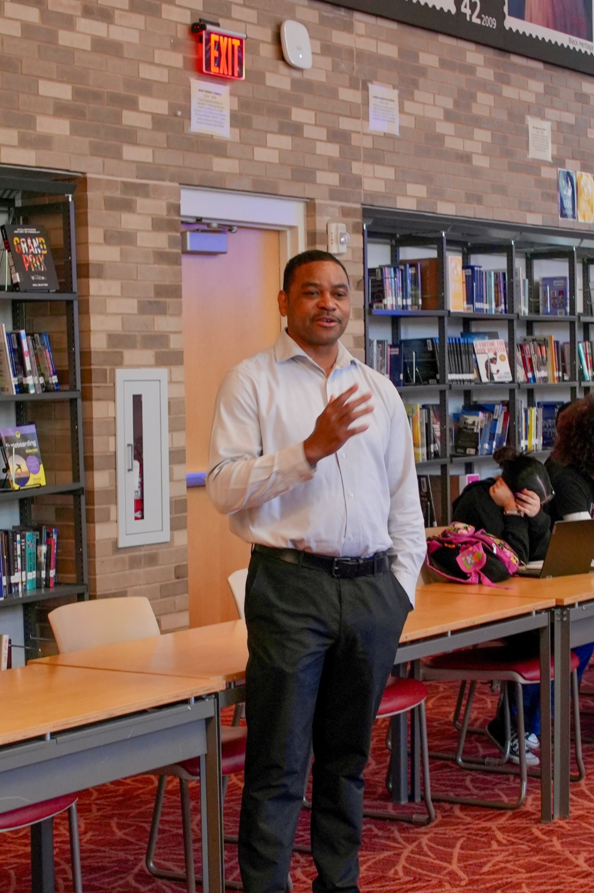
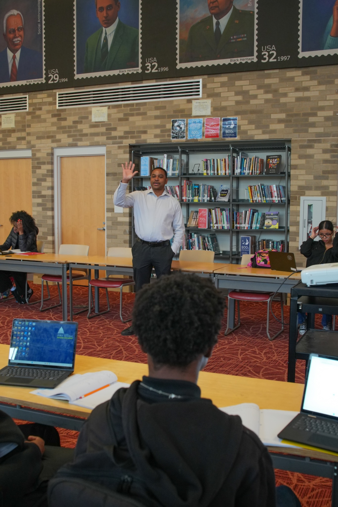

Career Shop DC x Dunbar’s “Learn & Earn” Multi-Track Work Based Learning Internship Program empowering youth through
Engineering, Sports Management, Entrepreneurship, and AI.

Mr. Jacobs — Sports Management
One of the most enjoyable experiences that I’ve had in all of my years teaching at DCPS.
— Mr. Jacobs Sports Management Academy · Dunbar High SchoolA Work-Based Learning Internship where DC youth earn $17.95/hr while building real career skills across four dynamic tracks.
Students were expected to demonstrate professionalism — arriving on time, communicating effectively, and delivering high-quality work as part of a real work-based learning experience.
▶ Click the dots to explore each career track
Students designed community-focused solutions using architecture, urban planning, and design thinking. Capstone projects were reviewed by industry professionals including a Senior Designer at Amtrak.
Students explored the business of sports — from player contracts and compliance to brand management. Guest speakers included an NFL Agent and a Georgetown University Athletic Director.
Students developed business plans, explored food entrepreneurship, and learned from real founders including a vegan food truck CEO with celebrity clientele and a community reentry entrepreneur.
Students used AI tools including ChatGPT to create original work — from 3D architectural renders to animated videos and logo design. Projects demonstrated how AI amplifies creative and professional output.
33 Student Voices. One Powerful Impact.
of Learn & Earn — Student Voices Lifting Us Up! ♡
✨ Thank you for sharing your stories and inspiring others! ✨
💰 What students did with their earnings
All surveys available upon request
Educators discuss student development and the key elements that distinguished this program.
From industry mentors and program staff to classroom educators and the students themselves — every voice shaped this experience.
Karl Stewart is a Senior Designer at Amtrak, bringing professional-level architectural and design expertise into the classroom. He visited the Engineering Track twice during the Learn & Earn program, providing real-world design critique and technical guidance that pushed students to think like working professionals.
His first visit focused on reviewing student concepts and offering feedback grounded in industry standards. He returned a second time as a formal presentation judge for the capstone showcase, evaluating students' community-focused engineering solutions.



Corey Knight, CEO of Community Cafe Express, partnered with Career Shop DC to provide Entrepreneurship students with hands-on exposure to real-world business operations. To support student participation and well-being throughout the Learn & Earn Program, Career Shop DC contracted Community Cafe Express to provide lunch for participating students during program activities. This partnership not only ensured students had access to meals but also created a unique opportunity to integrate entrepreneurship into the student experience.
By bringing his food truck directly to Dunbar High School, Corey transformed a daily business operation into a real-world learning environment. Students gained firsthand insight into entrepreneurship, customer service, inventory management, marketing, financial decision-making, and the day-to-day responsibilities of operating a successful small business.
Na'eem Outler is the founder of Vurger Guyz, a Black-owned vegan food truck based in Los Angeles that has become one of the most celebrated plant-based burger concepts on the West Coast. After going vegan and cracking the code for familiar tastes and textures, Na'eem and three friends launched Vurger Guyz — quickly attracting celebrity fans including Snoop Dogg, Pharrell Williams, NBA stars Chris Paul and DeAndre Jordan, and earning a spot on Beyoncé's curated directory of Black-owned businesses.
Featured in VegNews as one of the best Black-owned vegan restaurants in America, Na'eem brought his entrepreneurial journey — from concept to celebrity clientele — directly to Dunbar's Entrepreneurship Track students.
Jessica Featherstone is the founder of WellBody Kitchen, a health-forward food and wellness brand focused on nourishing communities through clean, intentional eating. Her work sits at the intersection of entrepreneurship, nutrition, and community wellness — making her a natural fit for students exploring business, health, and social impact.
Jessica shared her journey of building a mission-driven food business with Dunbar students, offering insight into how purpose and passion can fuel a brand that goes beyond profit to serve a larger community need.
Oliver Saunders is the son of acclaimed actress Garcelle Beauvais, known for her roles in Coming to America, The Jamie Foxx Show, Spider-Man, and The Real Housewives of Beverly Hills. Oliver himself appeared on The Jamie Foxx Show and was a recurring presence on The Real Housewives.
Today, Oliver manages one of Lisa Vanderpump's premier restaurants in Las Vegas, giving him firsthand experience in hospitality leadership, business operations, customer service, and brand management. His career journey provides students with a unique perspective on navigating both the entertainment industry and the business world.
As a mentor to Dunbar's Sports Management pathway, Oliver worked directly with students as they developed their podcast project. Through live sessions on Microsoft Teams, he engaged with students, answered questions, shared industry insights, and provided guidance on content creation, audience engagement, branding, and professional growth. His mentorship helped students connect classroom concepts to real-world experiences while gaining valuable exposure to media production, entrepreneurship, and professional networking.
Zachary Taylor is a football player at the University of Cincinnati, bringing a student-athlete perspective to Dunbar's Sports Management Track. His visit gave students an authentic look at what it takes to compete at the collegiate level — balancing academics, athletics, and personal development while working toward professional goals.
Johnathan Cockrell served as Team Captain of the University of Cincinnati Football Team — a role demanding athletic excellence, leadership, and accountability. His visit to Dunbar's Sports Management students focused on leadership on and off the field, and how lessons from athletics translate directly into professional life.
Greg Barnett is a seasoned NFL Agent whose career includes one of the most notable contract negotiations in recent league history — brokering linebacker Justin Houston's six-year, $101 million contract with the Kansas City Chiefs in 2015. His work represents the high-stakes intersection of sports, law, finance, and negotiation.
Greg gave students a behind-the-scenes look at the business side of professional football — from player representation and contract strategy to the relationships required to advocate for athletes at the highest level.
Akanni Turner serves as the Associate Athletic Director for Compliance at Georgetown University, overseeing the rules, regulations, and ethical standards that govern collegiate athletics. His visit introduced students to the administrative and compliance side of collegiate sports — a critical but often overlooked career pathway in sports management.
As Program Director, Gabi oversaw the Learn & Earn Program at Dunbar High School, providing strategic leadership across all career pathways. She cultivated partnerships with industry professionals, coordinated program operations, and created opportunities for students to engage in meaningful, real-world learning experiences. Through her leadership, students gained access to mentorship, workforce exposure, earned a competitive wage, and career-connected opportunities that help prepare them for success beyond high school.
Program Director Gabi Smith with a student — a moment of connection and encouragement
Led the AI Track and served as a cross-track specialist working with both the Engineering and Sports Management tracks, supporting students in grades 10–12. Alecia also facilitated the Earn 2 Learn Podcast — the Sports Management capstone project — and helped Engineering students transform hand-drawn sketches into 3D AI-generated visual concepts.
Trezell guided students in the Entrepreneurship Track by helping them turn ideas into action. She provided hands-on support in business planning, leadership, and innovation while connecting students with mentors and opportunities in the business community. Trezell also coordinated Career Shop Dunbar activities with the Office of Local and Small Business Development to ensure District support for our program.
Malik taught the Sports Management pathway, helping students develop leadership, teamwork, and industry knowledge through hands-on learning experiences. He coordinated with sports professionals and industry mentors to connect students with real-world perspectives and career opportunities. Malik also supported students as they prepared for Presentation Day, guiding them in refining projects, strengthening presentations, and effectively showcasing their work. His engaging instruction helped bring classroom learning to life while building confidence and professional skills.
Hope Cousin supported engineering students across multiple grade levels by helping guide project development from concept to presentation. She coordinated with industry mentors to provide students with real-world feedback and career insights, while assisting teams in transforming their ideas into professional model boards for Presentation Day. Through hands-on support, project coaching, and industry engagement, she helped students strengthen their design thinking, communication, and presentation skills.
Ulysses managed student timekeeping, stipend payments, and the program's debit card system, ensuring participants were compensated accurately and on time. He also provided financial literacy instruction focused on budgeting, saving, banking, and responsible money management. Through his support, students gained valuable experience in workplace accountability, understanding earnings, and developing lifelong financial skills.
Mr. Jacobs leads the Sports Management Academy at Paul Laurence Dunbar High School. A former athlete himself, he brings firsthand knowledge of sports culture, competition, and the discipline required to succeed both on and off the field. His background gives him a unique ability to connect with students and translate athletic experience into professional career readiness.
Mr. Robinson teaches African American History and the History of Paul Laurence Dunbar High School, grounding students in the legacy of the institution they attend. His work connects historical context to present-day identity and purpose, helping students understand where they come from as they chart where they are going.
Ms. Beard heads the Engineering Academy at Dunbar High School and served as the Senior Engineering Instructor for the Learn & Earn Program. She guided senior-level students through the full engineering design process, from community problem identification to prototype development and final presentations.
Ms. Lawrence provides dedicated support for students with special needs within the Entrepreneurship Track, ensuring every student has equitable access to the program's learning experiences. Her presence reflects the program's commitment to inclusive education and meeting students where they are.
Discover how students grew and why this program made a lasting difference.
Explore firsthand perspectives from students and educators about the impact of Learn & Earn.
Instructors and program leaders reflect on student growth, standout moments, and what made this cohort of Dunbar students truly exceptional.
Students didn't just learn about media — they became the media. Sports Management students produced a live filmed podcast, interviewing peers about their business concepts and breakthroughs.
Samari Marshall receives award for unexpectedly delivering his presentation alone. Now that's real leadership!
Mini Olympics Team Members celebrating their win on Presentation Day with Alecia and Gabi
Each career track offered students a unique lens on workforce readiness, community impact, and professional development.
Students were tasked with identifying community-based problems in Wards 5, 7, and 8 and developing engineering solutions grounded in research, design thinking, and user needs. Their work centered on issues including limited access to safe green spaces, low physical activity rates, and health disparities.
The 9th Grade Afro Pioneers team designed AFRO STADIUM, an innovative stadium concept focused on community engagement, culture, and recreation.
The 12th Grade Teams designed a variety of engineering-based solutions centered on parks, recreational spaces, and community development initiatives.
Scholars worked collaboratively in teams to research, design, market, budget, and develop a youth sports league for the District of Columbia. Students examined key challenges facing DC youth, including rising crime rates, chronic absenteeism, and limited recreational opportunities.
Six teams competed in capstone presentations, with the top two earning First and Second Place recognition.
Teams: Afro Pioneers, Young National Sports Association (YNSA), GoGo Power Rangers, Washington Sports & Education Foundation, Next Gen Youth Sports League & Sankofa Elite
Students developed simulated food truck businesses for Washington, DC, applying classroom knowledge in practical, real-world contexts. Each team created a business name, brand identity, menu, budget, marketing plan, and investor-style pitch.
Teams: Food for the Future, Frosty Wheels, Bison Soul Bites, Treats by Scouts
Led by Alecia Tatum, the AI Track introduced students to practical uses of artificial intelligence within their assigned career pathways. Students learned how AI can be used as a professional tool to support creativity, research, design, branding, marketing, storytelling, and project development.
Engineering students used AI tools to transform hand-drawn sketches into 3D-style visual concepts and animations. Sports Management students applied AI to enhance their business presentations and marketing materials.
A student’s hand-drawn blueprint for a community park space redesign, created during the Engineering track.
The hand-drawn sketch transformed into a detailed 3D aerial render using ChatGPT, visualizing the full park layout.
The 3D render brought to life as a flyover animation using Seed Dance AI, showcasing the completed park vision.
127 students completed program surveys at the conclusion of the Learn & Earn program. The results speak for themselves — overwhelming support, improved attendance, and unanimous agreement that the program should continue.
Full Surveys Available
Would you recommend people to this program?
127 responses
79.5% of students gave the highest rating of 5 out of 5
Were there days when you came to school when you normally would not have?
126 responses
84.1% said the program brought them to school on days they otherwise would have stayed home
Do you think the program should continue?
126 responses
100% of students said the program should continue
Data-driven highlights that tell the story of real, measurable change — in attendance, academic engagement, and individual student growth across the program period.
| Grade | Improvement Rate | Chronic Absence Change | Notable |
|---|---|---|---|
| Grade 11 | 57.6% | −3 students | Strongest improvement rate overall |
| Grade 12 | 50.0% | −7 students | Best endpoint average (81.5%) & sharpest absence reduction |
Identified across all tracks, these areas represent opportunities to strengthen future program implementation.
Earlier intervention and proactive family outreach would help prevent students from falling behind. A structured midpoint review would help keep students on track and prevent drift. Clear, consistent communication among program leaders, teachers, and families will strengthen implementation.
Additional field trips to local businesses, incubators, and entrepreneurship centers would deepen real-world understanding. An extended program timeline would allow students to move beyond planning and into product testing, customer validation, and live business simulations.
Future programming should include family showcase events and entrepreneurship nights to celebrate student accomplishments. Increased family engagement would strengthen the support network around students and amplify the program's impact on the broader community.
Many students would benefit from ongoing mentorship beyond Learn & Earn to sustain momentum and support future goals. Expanding the speaker series would expose students to a wider variety of industries and business models, broadening their understanding of career pathways.
Daily reflection prompts would strengthen students' ability to articulate design decisions. Guest speakers should be scheduled to align with project milestones for maximum impact, ensuring students can immediately apply insights to their work.
Students would also benefit from small-group or pullout sessions focused on foundational CAD skills. Dedicated time to learn Autodesk Fusion 360 basics before applying it to projects would strengthen design outputs and student confidence in technical tools.
Students would benefit from more structured time to learn the basics of AI prompting before applying it to their projects. Some students needed additional support in understanding how to write clear, specific prompts and how to revise those prompts when initial results did not meet expectations.
Building on the momentum of a strong inaugural year, the following recommendations are designed to deepen student impact, expand career alignment, and elevate the Learn & Earn experience for the 2026–2027 school year.
For FY 26–27, we recommend implementing two cohorts: one launching in the Fall semester and one in the Spring. This structure would allow more students to participate throughout the year, create a stronger sense of community between cohorts, and give instructors the opportunity to refine curriculum between sessions. A two-cohort model also aligns with school-year scheduling and increases the program's overall reach and impact.
Begin the planning and onboarding phase earlier in the school year to allow more time for curriculum alignment, instructor preparation, and student goal-setting. An earlier start creates space for deeper project development and reduces last-minute adjustments.
Incorporate a structured career interest assessment at the start of the program to better match students with tracks and projects that reflect their individual aspirations. Stronger alignment between student goals and program content drives higher engagement and ownership.
Introduce organized field trips to relevant industry sites, offices, and community spaces to give students tangible, real-world context for what they are learning. Site visits to architecture firms, sports organizations, food businesses, and tech companies would bridge classroom concepts with lived experience.
Ensure reliable, high-speed internet access across all classrooms to fully leverage AI tools and platforms. Consistent connectivity is essential for students to engage with design software, AI image generation, research tools, and digital collaboration platforms without interruption.
Introduce a dedicated lesson or module on financial literacy and fiscal responsibility across all tracks. Understanding budgeting, saving, credit, and entrepreneurial finance equips students with life skills that extend well beyond the program and directly support their long-term economic mobility.